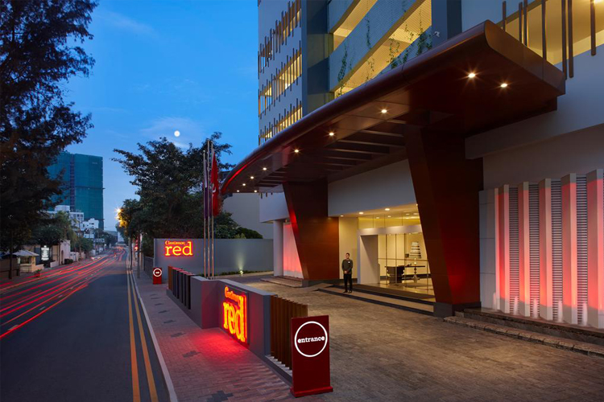
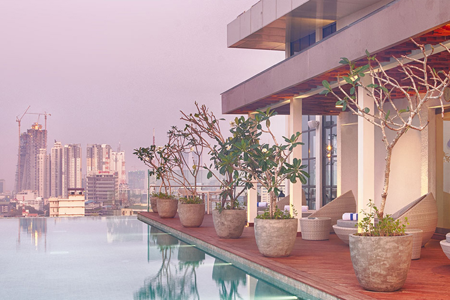
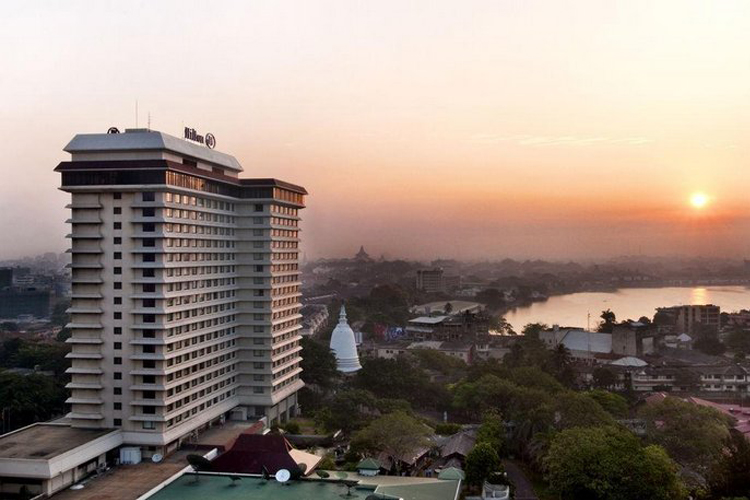
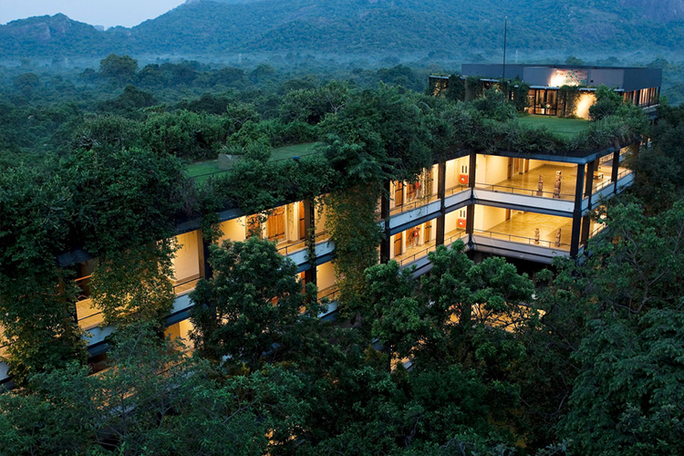
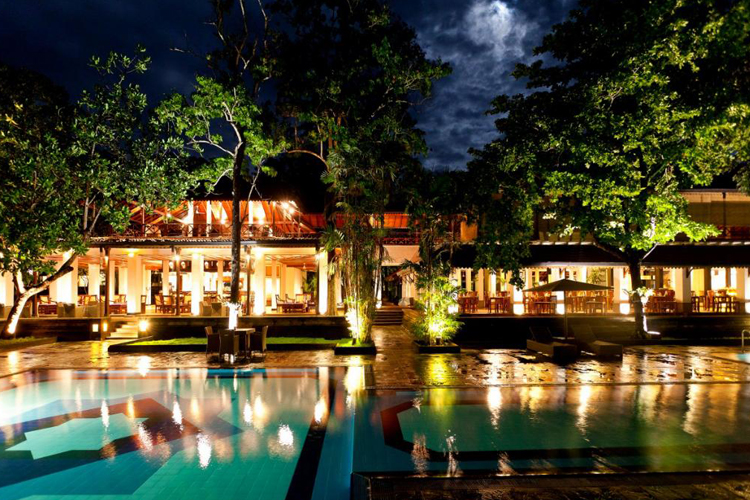
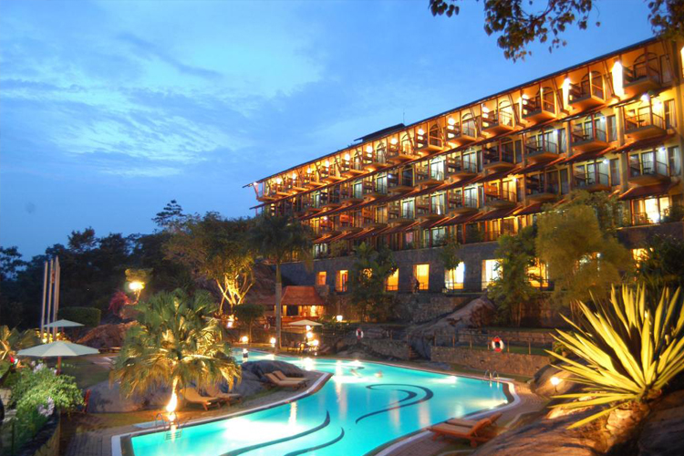
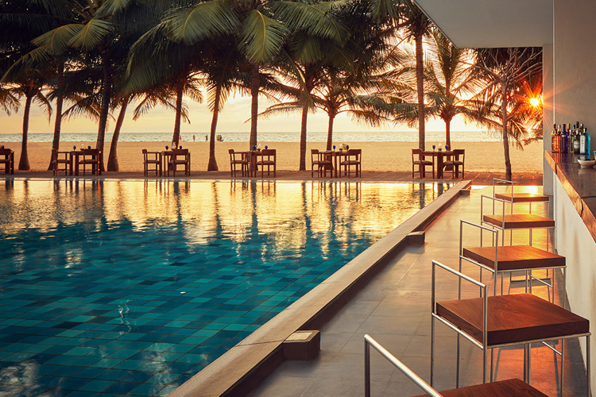

Check our guide below

Cinnamon Red Colombo
Cinnamon Red is a pioneering new breed of city hotel in Colombo combining economy with elegance and intelligence with style.
Nowhere else in Colombo will you find the design, elegance and comfort of a 5-star hotel for mid-range budgets than with Cinnamon Red!
Begin your journey in their curated underground car park that features street and wall art by Sri Lanka’s bold new breed of aesthetic souls.
Step into the elevator and check in at their art deco lobby and reception on the 7th floor.
Express and paperless check-in processes make for speed and efficiency while keeping their minds on the environment.
You’ll also find that they’ve minimized the need for printing and the waste of paper all across the hotel.
Their state-of-the-art technology around the hotel adds to the package, making us the most modern and tech
savvy hotel on the island. While other hotels provide you with the basics,
everything about Cinnamon Red redefines space age design, high-end technology and modern progress.

Jetwing Colombo Seven
Jetwing Colombo Seven is the first city hotel to be built by the premium hospitality brand in the cosmopolitan city of Colombo, and stands overlooking the metropolis.
The views from the rooftop restaurant and bar are truly spectacular; they offer a bird’s eye view of the heart of Colombo,
and its bordering beach. Centrally located, Jetwing Colombo Seven is in close proximity to all key shopping and business areas.
Other sights of interest include the imposing Colombo National Museum, dedicated to Sri Lankan history, the sprawling Viharamahadevi
Park and its seated, golden Buddha. Home to serviced apartments, studio apartments and rooms, its minimalist décor ensures a contemporary design is ever present in the hotel’s architecture and ambience. Jetwing Colombo Seven bears testament to the traditional Sri Lankan hospitality the brand exemplifies,
and offers a lovely time of respite, both to the business and leisure traveler.

Hilton Hotel Colombo
Awarded the title of Sri Lanka’s Leading Hotel and Sri Lanka’s Leading Business Hotel at the World Travel Awards, this Colombo hotel is centrally located in Colombo’s business district. With a range of accommodation, from guest rooms and executive rooms to suites, this hotel in Colombo offers stunning views over the Indian Ocean. For relaxation and business alike, Guests will enjoy the endless luxurious accommodations we have to offer.
Forty-five minutes away from the Bandaranaike International Airport, this Colombo hotel offers business travelers both comfort and convenience. Directly connected to Colombo World Trade Centre, Hilton Colombo offers 25 on-site venues for business and social functions, including the city’s only pillar-less ballroom

Heritance Kandalama, Dambulla
Set amidst jungle on a mountainside overlooking the Sigiriya rock fortress, this eco-chic hotel is next to Kandalama Reservoir and 10 km from the Golden Temple of Dambulla.
Warm, elegant rooms feature balconies and luxurious bathrooms with reservoir views. All also offer free Wi-Fi, flat-screens and air-conditioning, as well as minibars and tea and coffeemaking facilities. Suites add DVD players and Jacuzzis; some offer butler service. Hot breakfast is served in an airy restaurant with a terrace. There's also refined fusion dining. Other amenities include a relaxed bar and a spa, in addition to a library, a kids' play area and 3 outdoor pools.

Cinammon Lodge Habarana
A haven for the time traveler, the nature lover, the escapist, and the explorer, Cinnamon Lodge Habarana is a 5-star resort nestled in nature’s serenity right in the heart of Sri Lanka’s Cultural Triangle. A place that soothes the soul, rejuvenates the senses, and awakens the mind with heavy doses of nature’s tranquility and centuries-old hospitality.
The hotel has a bar, a teahouse and 2 restaurants, which offer organic dishes and open-air dining. Other amenities include a spa, tennis courts and an outdoor pool, as well as a kids' playground, an environmental centre, and a treehouse with chess and backgammon.

Earls Regency Kandy
Earl’s Regency takes you back over 200 years to Sri Lanka’s last and most exotic monarchy.
Live like royalty at the Earl’s Regency – a premier five star getaway among luxury hotels Sri Lanka, located in the heart of the island’s cultural capital, Kandy. Surrounded by the history and tradition of the kings before us, we at Earl’s regency, a leading hospitality provider among all Kandy hotels and reputed Kandy luxury hotels, provide a luxury base for you to venture out and explore from. So pack your bags your highness, your carriage awaits to take you to a different time, a different place, a different era.

Jetwing Blue Negombo
Welcome to Jetwing Blue, Negombo, and a stylish beach hotel which redefines the ultimate beach holiday experience. Warm Sri Lankan hospitality combined with contemporary comforts and excellent service is yours to enjoy as you enter this world of secluded bliss.
This trendy coastal getaway with its vibrant new look, embodies a contemporary taste of luxury living. Modern elegance combined with simplicity is the key feature of the beautifully designed rooms and suites. Dining options at Jetwing Blue are many and varied, with each meal a gastronomical delight which will tantalize your taste buds. The 800 seat ballroom (theatre-style) provides the ideal venue for conferences and events while the smaller venues are popular for weddings.